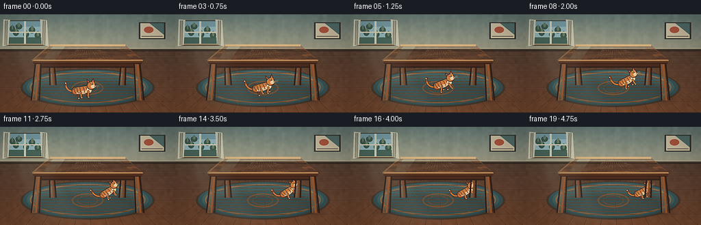
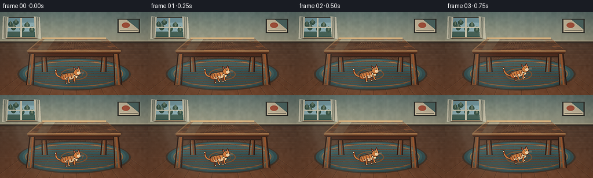
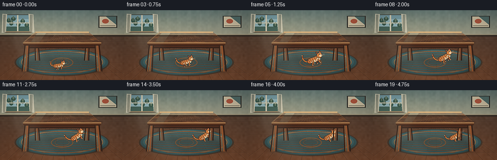
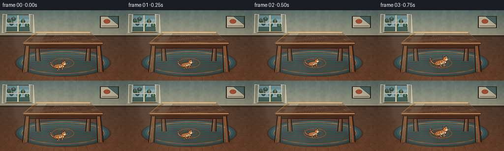
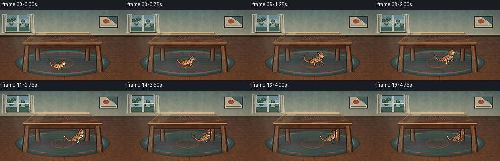
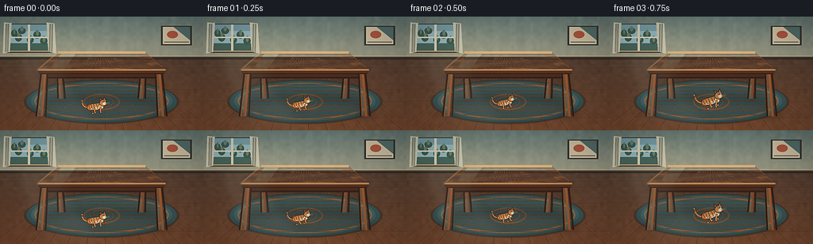

CODING AGENTS AS PIXEL WORLD MODELS
traex/DeepSeek-V4.1-Flash · dynamic_spatial_relationship_0018
点击播放 · 原生 RGB 像素
逐轮保存的候选
回放视频、检查图与代码变化。
每份候选均可单独播放。实际图片检查记录在下方工具轨迹中。
候选 01播放与检查图
点击播放 · 原生 RGB 像素


展开代码变化
--- 上一保存版本
+++ 本次保存版本
@@ -0,0 +1,500 @@
+from pathlib import Path
+import math
+
+import numpy as np
+from PIL import Image, ImageDraw, ImageFilter
+
+import artifact_io
+
+
+W, H = 256, 144
+FRAMES = 20
+FPS = 4.0
+SS = 4
+RW, RH = W * SS, H * SS
+
+
+def pt(x, y):
+ return (float(x * RW), float(y * RH))
+
+
+def box(x0, y0, x1, y1):
+ return (float(x0 * RW), float(y0 * RH), float(x1 * RW), float(y1 * RH))
+
+
+def poly(points):
+ return [pt(x, y) for x, y in points]
+
+
+def mix(a, b, t):
+ return tuple(int(round(a[i] + (b[i] - a[i]) * t)) for i in range(3))
+
+
+def lerp(a, b, t):
+ return (a[0] + (b[0] - a[0]) * t, a[1] + (b[1] - a[1]) * t)
+
+
+def smoothstep(t):
+ t = max(0.0, min(1.0, t))
+ return t * t * (3.0 - 2.0 * t)
+
+
+def composite(base, layer):
+ return Image.alpha_composite(base, layer)
+
+
+def new_layer():
+ return Image.new("RGBA", (RW, RH), (0, 0, 0, 0))
+
+
+def make_background():
+ yy = np.linspace(0.0, 1.0, RH, dtype=np.float32)[:, None]
+ xx = np.linspace(0.0, 1.0, RW, dtype=np.float32)[None, :]
+
+ wall_top = np.array([102, 122, 117], dtype=np.float32)
+ wall_bottom = np.array([158, 155, 132], dtype=np.float32)
+ wall_t = np.clip(yy / 0.365, 0.0, 1.0)
+ wall = wall_top[None, None, :] * (1.0 - wall_t[:, :, None]) + wall_bottom[None, None, :] * wall_t[:, :, None]
+ wall = np.broadcast_to(wall, (RH, RW, 3)).copy()
+
+ floor_near = np.array([118, 73, 48], dtype=np.float32)
+ floor_far = np.array([83, 61, 48], dtype=np.float32)
+ floor_t = np.clip((yy - 0.365) / 0.635, 0.0, 1.0)
+ floor = floor_far[None, None, :] * (1.0 - floor_t[:, :, None]) + floor_near[None, None, :] * floor_t[:, :, None]
+ floor = np.broadcast_to(floor, (RH, RW, 3)).copy()
+
+ mask = yy >= 0.365
+ image = wall * (1.0 - mask[:, :, None]) + floor * mask[:, :, None]
+
+ # Gentle wall light from the window and a warm bounce near the floor.
+ light = np.exp(-(((xx - 0.16) / 0.34) ** 2 + ((yy - 0.24) / 0.30) ** 2) * 2.0)
+ image += light[:, :, None] * np.array([15, 14, 9], dtype=np.float32)
+ warm = np.clip((yy - 0.62) / 0.38, 0.0, 1.0) * np.clip(1.0 - abs(xx - 0.50) / 0.62, 0.0, 1.0)
+ image += warm[:, :, None] * np.array([12, 7, 3], dtype=np.float32)
+
+ rng = np.random.default_rng(18)
+ low = rng.normal(0.0, 2.5, (36, 64, 1)).astype(np.float32)
+ noise = np.asarray(Image.fromarray(low[:, :, 0], mode="F").resize((RW, RH), Image.Resampling.BICUBIC))
+ image += noise[:, :, None]
+
+ return Image.fromarray(np.uint8(np.clip(image, 0, 255)), "RGB").convert("RGBA")
+
+
+def draw_wall_and_floor(base):
+ layer = new_layer()
+ draw = ImageDraw.Draw(layer, "RGBA")
+
+ # Quiet wallpaper bands.
+ for i in range(13):
+ x = 0.015 + i * 0.082
+ draw.rectangle(box(x, 0.0, x + 0.031, 0.355), fill=(232, 226, 203, 8))
+
+ # Baseboard.
+ draw.rectangle(box(0.0, 0.344, 1.0, 0.376), fill=(65, 55, 45, 235))
+ draw.rectangle(box(0.0, 0.344, 1.0, 0.352), fill=(194, 178, 146, 150))
+ draw.rectangle(box(0.0, 0.366, 1.0, 0.376), fill=(48, 39, 33, 220))
+
+ # Floor boards converge toward a shallow vanishing point.
+ vx, vy = 0.50, 0.285
+ bottoms = [-0.05, 0.045, 0.14, 0.235, 0.33, 0.425, 0.52, 0.615, 0.71, 0.805, 0.90, 1.00, 1.08]
+ for xb in bottoms:
+ xh = vx + (xb - vx) * ((0.365 - vy) / (1.0 - vy))
+ draw.line([pt(xh, 0.365), pt(xb, 1.02)], fill=(46, 29, 23, 105), width=max(1, SS))
+ draw.line([pt(xh + 0.003, 0.365), pt(xb + 0.003, 1.02)], fill=(220, 160, 104, 20), width=max(1, SS))
+
+ for y in [0.391, 0.418, 0.453, 0.500, 0.561, 0.640, 0.746, 0.889]:
+ draw.line([pt(0.0, y), pt(1.0, y + 0.005)], fill=(48, 29, 22, 76), width=max(1, SS))
+ draw.line([pt(0.0, y + 0.003), pt(1.0, y + 0.008)], fill=(208, 146, 94, 18), width=max(1, SS))
+
+ rng = np.random.default_rng(9)
+ for _ in range(48):
+ xb = float(rng.uniform(0.0, 1.0))
+ xh = vx + (xb - vx) * ((0.365 - vy) / (1.0 - vy))
+ y0 = float(rng.uniform(0.40, 0.78))
+ y1 = min(1.0, y0 + float(rng.uniform(0.08, 0.24)))
+ x0 = vx + (xb - vx) * ((y0 - vy) / (1.0 - vy))
+ x1 = vx + (xb - vx) * ((y1 - vy) / (1.0 - vy))
+ draw.line([pt(x0, y0), pt(x1, y1)], fill=(231, 173, 111, int(rng.integers(8, 20))), width=max(1, SS // 2))
+
+ base = composite(base, layer)
+
+ # Window, frame, and muted outdoor view.
+ glow = new_layer()
+ gd = ImageDraw.Draw(glow, "RGBA")
+ gd.rectangle(box(0.040, 0.070, 0.248, 0.305), fill=(189, 213, 210, 42))
+ glow = glow.filter(ImageFilter.GaussianBlur(14 * SS))
+ base = composite(base, glow)
+
+ layer = new_layer()
+ draw = ImageDraw.Draw(layer, "RGBA")
+ draw.rectangle(box(0.035, 0.063, 0.252, 0.310), fill=(62, 61, 53, 245))
+ draw.rectangle(box(0.043, 0.071, 0.244, 0.300), fill=(151, 185, 190, 255))
+ draw.rectangle(box(0.043, 0.071, 0.244, 0.126), fill=(121, 158, 166, 255))
+ draw.rectangle(box(0.043, 0.235, 0.244, 0.300), fill=(75, 104, 92, 255))
+
+ # Soft foliage outside.
+ leaves = [
+ (0.055, 0.116, 0.085, 0.180),
+ (0.074, 0.151, 0.108, 0.220),
+ (0.088, 0.098, 0.126, 0.154),
+ (0.132, 0.175, 0.166, 0.235),
+ (0.165, 0.128, 0.201, 0.194),
+ (0.198, 0.182, 0.233, 0.248),
+ ]
+ for x0, y0, x1, y1 in leaves:
+ draw.ellipse(box(x0, y0, x1, y1), fill=(52, 84, 71, 215))
+ draw.ellipse(box(x0 + 0.012, y0 - 0.012, x1 - 0.010, y1 - 0.025), fill=(82, 114, 86, 120))
+
+ # Window muntins and warm sill.
+ draw.rectangle(box(0.137, 0.071, 0.148, 0.300), fill=(215, 210, 186, 255))
+ draw.rectangle(box(0.043, 0.178, 0.244, 0.188), fill=(215, 210, 186, 255))
+ draw.rectangle(box(0.027, 0.302, 0.259, 0.319), fill=(86, 66, 50, 255))
+ draw.rectangle(box(0.027, 0.302, 0.259, 0.309), fill=(200, 175, 133, 230))
+
+ # Pale curtains at the sides of the window.
+ draw.polygon(poly([(0.020, 0.052), (0.057, 0.056), (0.048, 0.312), (0.014, 0.326)]), fill=(222, 215, 190, 210))
+ draw.polygon(poly([(0.229, 0.052), (0.268, 0.060), (0.277, 0.325), (0.238, 0.309)]), fill=(218, 210, 185, 205))
+ for x in [0.031, 0.041, 0.247, 0.257]:
+ draw.line([pt(x, 0.063), pt(x - 0.003, 0.312)], fill=(145, 133, 111, 80), width=2 * SS)
+
+ # Small framed print balances the window without competing with the table.
+ draw.rectangle(box(0.792, 0.083, 0.944, 0.252), fill=(55, 54, 48, 245))
+ draw.rectangle(box(0.801, 0.091, 0.935, 0.243), fill=(204, 191, 162, 255))
+ draw.ellipse(box(0.822, 0.126, 0.875, 0.190), fill=(178, 82, 57, 230))
+ draw.polygon(poly([(0.854, 0.091), (0.935, 0.091), (0.935, 0.208)]), fill=(76, 105, 102, 220))
+ draw.rectangle(box(0.808, 0.222, 0.928, 0.226), fill=(82, 74, 60, 210))
+
+ return composite(base, layer)
+
+
+def draw_rug(base):
+ layer = new_layer()
+ draw = ImageDraw.Draw(layer, "RGBA")
+
+ draw.ellipse(box(0.118, 0.555, 0.882, 0.945), fill=(34, 48, 47, 120))
+ draw.ellipse(box(0.123, 0.558, 0.877, 0.936), fill=(74, 57, 45, 245))
+ draw.ellipse(box(0.130, 0.563, 0.870, 0.929), fill=(56, 84, 85, 255))
+ draw.ellipse(box(0.153, 0.574, 0.847, 0.915), fill=(67, 99, 99, 255))
+ draw.ellipse(box(0.169, 0.584, 0.831, 0.904), outline=(178, 137, 89, 155), width=2 * SS)
+
+ # Subtle woven bands and an understated central medallion.
+ for y in np.linspace(0.594, 0.892, 11):
+ width = 0.32 * math.sqrt(max(0.02, 1.0 - ((y - 0.743) / 0.174) ** 2))
+ draw.line([pt(0.5 - width, y), pt(0.5 + width, y)], fill=(205, 177, 132, 17), width=max(1, SS))
+ draw.ellipse(box(0.410, 0.678, 0.590, 0.822), outline=(191, 147, 94, 100), width=2 * SS)
+ draw.ellipse(box(0.442, 0.699, 0.558, 0.802), outline=(198, 175, 130, 62), width=SS)
+
+ return composite(base, layer)
+
+
+def cat_path(frame):
+ keys = [
+ (0, 0.473, 0.772, 0.680, 8.0, 0.12),
+ (2, 0.486, 0.755, 0.671, 12.0, 0.36),
+ (4, 0.514, 0.721, 0.654, 18.0, 0.78),
+ (6, 0.548, 0.691, 0.634, 23.0, 1.00),
+ (8, 0.581, 0.674, 0.617, 27.0, 1.00),
+ (10, 0.610, 0.664, 0.603, 30.0, 1.00),
+ (12, 0.632, 0.659, 0.592, 32.0, 0.88),
+ (14, 0.647, 0.657, 0.583, 31.0, 0.70),
+ (16, 0.658, 0.657, 0.574, 29.0, 0.50),
+ (18, 0.665, 0.658, 0.566, 27.0, 0.32),
+ (19, 0.668, 0.658, 0.562, 26.0, 0.24),
+ ]
+ for i in range(len(keys) - 1):
+ a, b = keys[i], keys[i + 1]
+ if a[0] <= frame <= b[0]:
+ t = (frame - a[0]) / (b[0] - a[0])
+ t = smoothstep(t)
+ return tuple(a[j] + (b[j] - a[j]) * t for j in range(1, 6))
+ return keys[-1][1:]
+
+
+def bezier_points(points, count=24):
+ out = []
+ for i in range(count + 1):
+ t = i / count
+ p = points
+ x = ((1 - t) ** 3) * p[0][0] + 3 * ((1 - t) ** 2) * t * p[1][0] + 3 * (1 - t) * t * t * p[2][0] + t ** 3 * p[3][0]
+ y = ((1 - t) ** 3) * p[0][1] + 3 * ((1 - t) ** 2) * t * p[1][1] + 3 * (1 - t) * t * t * p[2][1] + t ** 3 * p[3][1]
+ out.append((x, y))
+ return out
+
+
+def thick_line(draw, points, fill, width, outline=None, outline_width=0):
+ if outline is not None and outline_width > 0:
+ draw.line(points, fill=outline, width=outline_width, joint="curve")
+ r = outline_width / 2
+ for x, y in (points[0], points[-1]):
+ draw.ellipse((x - r, y - r, x + r, y + r), fill=outline)
+ draw.line(points, fill=fill, width=width, joint="curve")
+ r = width / 2
+ for x, y in (points[0], points[-1]):
+ draw.ellipse((x - r, y - r, x + r, y + r), fill=fill)
+
+
+def draw_cat_art(phase, run):
+ cw, ch = 360, 260
+ cat = Image.new("RGBA", (cw, ch), (0, 0, 0, 0))
+ draw = ImageDraw.Draw(cat, "RGBA")
+
+ outline = (61, 38, 28, 255)
+ orange = (210, 124, 62, 255)
+ orange_dark = (157, 79, 43, 255)
+ orange_far = (126, 67, 44, 255)
+ cream = (238, 207, 163, 255)
+
+ # Tail curves behind the body and swishes against the stride.
+ swish = math.sin(phase * 0.72) * 7.0 * run
+ tail = bezier_points(
+ [
+ (91, 128),
+ (52, 121 + swish * 0.25),
+ (31 - swish * 0.3, 87 - 16 * run),
+ (47 + swish, 53 - 26 * run),
+ ],
+ 28,
+ )
+ thick_line(draw, tail, orange, 13, outline, 19)
+ thick_line(draw, tail[-6:], orange_dark, 13)
+ draw.ellipse((41 + swish - 8, 46 - 26 * run, 41 + swish + 8, 62 - 26 * run), fill=cream, outline=outline, width=3)
+
+ def leg(x, offset, near):
+ swing = math.sin(phase + offset)
+ lift = max(0.0, math.sin(phase + offset + 0.55))
+ amp = 0.18 + 0.82 * run
+ hip = (x, 146)
+ knee = (x + 13 * swing * amp, 168 - 7 * lift * amp)
+ ankle = (x + 29 * swing * amp, 194 - 16 * lift * amp)
+ color = orange if near else orange_far
+ width = 12 if near else 11
+ thick_line(draw, [hip, knee, ankle], color, width, outline, width + 6)
+ paw = (ankle[0] + 3, ankle[1] + 2)
+ draw.ellipse((paw[0] - 9, paw[1] - 7, paw[0] + 10, paw[1] + 7), fill=cream, outline=outline, width=3)
+ draw.line([(paw[0] + 1, paw[1] - 2), (paw[0] + 2, paw[1] + 4)], fill=(117, 80, 56, 150), width=2)
+ return ankle
+
+ # Far legs first.
+ leg(132, math.pi, False)
+ leg(205, math.pi * 0.35, False)
+
+ # Body capsule, haunch, and shoulder.
+ draw.rounded_rectangle((82, 94, 250, 162), radius=32, fill=outline)
+ draw.rounded_rectangle((88, 99, 244, 156), radius=27, fill=orange)
+ draw.ellipse((84, 102, 151, 160), fill=orange_dark)
+ draw.ellipse((91, 101, 151, 154), fill=orange)
+ draw.ellipse((197, 101, 251, 157), fill=(222, 138, 72, 255))
+
+ # Warm underside.
+ draw.ellipse((122, 135, 220, 162), fill=cream)
+ draw.ellipse((129, 139, 211, 158), fill=(226, 188, 143, 255))
+
+ # Dark tabby stripes follow the barrel of the body.
+ stripe = (139, 68, 39, 170)
+ for x, y0, y1 in [(110, 110, 148), (134, 103, 153), (160, 101, 155), (187, 102, 153), (214, 107, 148), (233, 115, 141)]:
+ bend = 3.0 if x % 2 else -3.0
+ draw.line([(x - 4, y0), (x + bend, (y0 + y1) / 2), (x + 4, y1)], fill=stripe, width=6)
+ draw.arc((93, 101, 150, 158), 190, 292, fill=(112, 58, 40, 150), width=4)
+
+ # Near legs and small cream bib.
+ draw.ellipse((211, 116, 253, 160), fill=cream)
+ leg(157, 0.0, True)
+ leg(224, math.pi * 1.35, True)
+
+ # Head and ears.
+ draw.polygon([(226, 78), (224, 38), (251, 68)], fill=outline)
+ draw.polygon([(259, 67), (283, 38), (289, 80)], fill=outline)
+ draw.polygon([(230, 73), (229, 48), (246, 68)], fill=orange_dark)
+ draw.polygon([(265, 67), (281, 48), (284, 77)], fill=orange_dark)
+ draw.polygon([(232, 70), (231, 54), (241, 67)], fill=(194, 117, 108, 230))
+ draw.polygon([(268, 67), (279, 54), (281, 75)], fill=(194, 117, 108, 230))
+
+ draw.ellipse((218, 66, 292, 137), fill=outline)
+ draw.ellipse((223, 70, 287, 132), fill=orange)
+ draw.ellipse((250, 70, 286, 103), fill=(225, 142, 74, 255))
+ draw.line([(249, 77), (253, 88), (261, 96)], fill=orange_dark, width=5)
+ draw.line([(271, 75), (268, 88), (275, 97)], fill=orange_dark, width=5)
+
+ # Cream muzzle, pink nose, amber eye, and whiskers.
+ draw.ellipse((251, 96, 291, 126), fill=cream)
+ draw.polygon([(283, 103), (291, 107), (283, 112)], fill=(174, 99, 89, 255), outline=outline)
+ draw.line([(283, 112), (283, 119)], fill=outline, width=2)
+ draw.arc((278, 113, 289, 122), 10, 145, fill=outline, width=2)
+ draw.ellipse((254, 84, 271, 96), fill=(218, 194, 104, 255), outline=outline, width=2)
+ draw.ellipse((261, 85, 267, 95), fill=(33, 32, 25, 255))
+ draw.ellipse((262, 85, 265, 91), fill=(239, 233, 192, 170))
+ for dy, slope in [(-5, -4), (1, 0), (7, 4)]:
+ draw.line([(287, 110 + dy), (323, 110 + dy + slope)], fill=(242, 223, 187, 150), width=2)
+
+ # Top rim light keeps the silhouette legible over dark wood.
+ draw.arc((93, 100, 243, 155), 190, 348, fill=(248, 197, 129, 90), width=3)
+ draw.arc((224, 71, 286, 131), 195, 315, fill=(250, 208, 146, 80), width=3)
+ return cat
+
+
+def draw_cat_shadow(layer, x, y, scale, tilt):
+ draw = ImageDraw.Draw(layer, "RGBA")
+ cx, cy = pt(x, y)
+ body_w = 180 * scale
+ body_h = 33 * scale
+ cy += 43 * scale
+ draw.ellipse((cx - body_w / 2, cy - body_h / 2, cx + body_w / 2, cy + body_h / 2), fill=(25, 17, 12, 72))
+ if scale > 0.5:
+ draw.ellipse((cx - body_w * 0.33, cy - body_h * 0.22, cx + body_w * 0.16, cy + body_h * 0.32), fill=(24, 15, 11, 42))
+
+
+def paste_cat(base, frame):
+ x, y, scale, tilt, run = cat_path(frame)
+ phase = frame * 2.20
+ bob = math.sin(phase * 2.0) * 2.2 * run
+ art = draw_cat_art(phase, run)
+ scaled = art.resize((max(1, round(360 * scale)), max(1, round(260 * scale))), Image.Resampling.LANCZOS)
+ rotated = scaled.rotate(tilt, resample=Image.Resampling.BICUBIC, expand=True)
+ cx, cy = pt(x, y + bob / RH)
+ base.alpha_composite(rotated, (round(cx - rotated.width / 2), round(cy - rotated.height / 2)))
+ return x, y, scale, tilt
+
+
+def draw_table(base):
+ layer = new_layer()
+ draw = ImageDraw.Draw(layer, "RGBA")
+
+ def tapered_leg(top_x, top_y, bottom_x, bottom_y, top_w, bottom_w, color, shade):
+ top_w, bottom_w = top_w * RW, bottom_w * RW
+ tx, ty = pt(top_x, top_y)
+ bx, by = pt(bottom_x, bottom_y)
+ points = [(tx - top_w / 2, ty), (tx + top_w / 2, ty), (bx + bottom_w / 2, by), (bx - bottom_w / 2, by)]
+ draw.polygon(points, fill=(52, 33, 24, 255))
+ inset = 2.0 * SS
+ inner = [
+ (tx - top_w / 2 + inset, ty + inset),
+ (tx + top_w / 2 - inset, ty + inset),
+ (bx + bottom_w / 2 - inset, by),
+ (bx - bottom_w / 2 + inset, by),
+ ]
+ draw.polygon(inner, fill=color)
+ highlight = [
+ (tx - top_w * 0.30, ty + inset),
+ (tx - top_w * 0.08, ty + inset),
+ (bx - bottom_w * 0.03, by),
+ (bx - bottom_w * 0.27, by),
+ ]
+ draw.polygon(highlight, fill=(205, 142, 87, 70))
+ shadow_side = [
+ (tx + top_w * 0.25, ty + inset),
+ (tx + top_w / 2 - inset, ty + inset),
+ (bx + bottom_w / 2 - inset, by),
+ (bx + bottom_w * 0.20, by),
+ ]
+ draw.polygon(shadow_side, fill=shade)
+
+ # Back legs sit deeper in the rug shadow.
+ tapered_leg(0.294, 0.431, 0.303, 0.722, 0.030, 0.042, (126, 72, 43, 255), (78, 43, 29, 90))
+ tapered_leg(0.706, 0.431, 0.697, 0.722, 0.030, 0.042, (126, 72, 43, 255), (70, 39, 28, 100))
+
+ # Dark apron below the tabletop.
+ draw.polygon(poly([(0.202, 0.469), (0.798, 0.469), (0.786, 0.531), (0.214, 0.531)]), fill=(77, 44, 30, 255))
+ draw.polygon(poly([(0.214, 0.531), (0.786, 0.531), (0.780, 0.545), (0.220, 0.545)]), fill=(48, 31, 24, 220))
+ draw.line([pt(0.224, 0.486), pt(0.776, 0.486)], fill=(172, 107, 62, 100), width=2 * SS)
+
+ # Front legs overlap the apron and the cat path near the rear.
+ tapered_leg(0.218, 0.493, 0.202, 0.875, 0.039, 0.053, (151, 87, 48, 255), (89, 47, 30, 105))
+ tapered_leg(0.782, 0.493, 0.798, 0.875, 0.039, 0.053, (151, 87, 48, 255), (83, 44, 29, 110))
+
+ # Tabletop edge and surface.
+ fl, fr = (0.185, 0.468), (0.815, 0.468)
+ bl, br = (0.285, 0.315), (0.715, 0.315)
+ draw.polygon(poly([fl, fr, (0.811, 0.497), (0.189, 0.497)]), fill=(89, 51, 32, 255))
+ draw.polygon(poly([(0.189, 0.497), (0.811, 0.497), (0.802, 0.506), (0.198, 0.506)]), fill=(54, 34, 25, 230))
+ draw.polygon(poly([bl, br, fr, fl]), fill=(170, 102, 59, 255))
+
+ # Broad tonal panel on the tabletop.
+ draw.polygon(poly([(0.318, 0.340), (0.676, 0.340), (0.746, 0.448), (0.258, 0.448)]), fill=(192, 124, 73, 75))
+ draw.polygon(poly([(0.360, 0.330), (0.636, 0.330), (0.690, 0.385), (0.306, 0.385)]), fill=(236, 169, 102, 38))
+
+ # Wood grain runs across the long axis with perspective compression.
+ rng = np.random.default_rng(31)
+ for i in range(19):
+ v = 0.055 + i * 0.049
+ left = lerp(bl, fl, v)
+ right = lerp(br, fr, v)
+ pts = []
+ for j in range(21):
+ q = j / 20
+ p = lerp(left, right, q)
+ wave = math.sin(q * math.pi * 3.4 + i * 0.7) * (0.0015 + 0.0018 * v)
+ pts.append(pt(p[0], p[1] + wave))
+ alpha = int(rng.integers(34, 82))
+ draw.line(pts, fill=(91, 48, 28, alpha), width=max(1, SS))
+ if i % 3 == 0:
+ draw.line([(x, y + 2 * SS) for x, y in pts], fill=(245, 189, 119, 22), width=max(1, SS // 2))
+
+ # Highlighted edges and a soft reflected window streak.
+ draw.line([pt(*bl), pt(*br)], fill=(245, 191, 126, 175), width=3 * SS)
+ draw.line([pt(*fl), pt(*fr)], fill=(241, 180, 111, 155), width=2 * SS)
+ draw.line([pt(*bl), pt(*fl)], fill=(227, 164, 100, 80), width=2 * SS)
+ draw.polygon(poly([(0.300, 0.329), (0.370, 0.329), (0.317, 0.459), (0.247, 0.459)]), fill=(234, 202, 153, 26))
+
+ return composite(base, layer)
+
+
+def make_shadow_layer(frame):
+ layer = new_layer()
+ draw = ImageDraw.Draw(layer, "RGBA")
+
+ # Broad table shadow on the rug.
+ draw.ellipse(box(0.170, 0.684, 0.830, 0.905), fill=(20, 15, 13, 70))
+ draw.ellipse(box(0.235, 0.720, 0.750, 0.880), fill=(18, 13, 11, 46))
+ for x, y in [(0.202, 0.872), (0.798, 0.872), (0.303, 0.721), (0.697, 0.721)]:
+ draw.ellipse(box(x - 0.045, y - 0.012, x + 0.045, y + 0.016), fill=(20, 13, 10, 90))
+
+ x, y, scale, tilt, _ = cat_path(frame)
+ draw_cat_shadow(layer, x, y, scale, tilt)
+ return layer.filter(ImageFilter.GaussianBlur(4.5 * SS))
+
+
+def add_light_and_finish(base, frame):
+ layer = new_layer()
+ draw = ImageDraw.Draw(layer, "RGBA")
+
+ # A narrow pool of window light across the floor and tabletop.
+ draw.polygon(poly([(0.060, 0.330), (0.230, 0.330), (0.520, 0.985), (0.190, 0.985)]), fill=(181, 207, 201, 18))
+ draw.polygon(poly([(0.210, 0.322), (0.310, 0.322), (0.430, 0.481), (0.255, 0.481)]), fill=(225, 220, 180, 14))
+ layer = layer.filter(ImageFilter.GaussianBlur(7 * SS))
+ base = composite(base, layer)
+
+ arr = np.asarray(base.convert("RGB"), dtype=np.float32)
+ yy = np.linspace(0.0, 1.0, RH, dtype=np.float32)[:, None]
+ xx = np.linspace(0.0, 1.0, RW, dtype=np.float32)[None, :]
+ vignette = 1.0 - 0.20 * np.clip(((xx - 0.5) / 0.58) ** 2 + ((yy - 0.48) / 0.68) ** 2, 0.0, 1.0)
+ arr *= vignette[:, :, None]
+
+ rng = np.random.default_rng(400 + frame)
+ grain = rng.normal(0.0, 1.15, (RH // 2, RW // 2, 1)).astype(np.float32)
+ grain = np.asarray(Image.fromarray(grain[:, :, 0], mode="F").resize((RW, RH), Image.Resampling.BILINEAR))
+ arr += grain[:, :, None]
+
+ image = Image.fromarray(np.uint8(np.clip(arr, 0, 255)), "RGB")
+ image = image.resize((W, H), Image.Resampling.LANCZOS)
+ image = image.filter(ImageFilter.UnsharpMask(radius=0.7, percent=70, threshold=2))
+ return np.asarray(image, dtype=np.uint8)
+
+
+def render():
+ base = make_background()
+ base = draw_wall_and_floor(base)
+ base = draw_rug(base)
+ frames = []
+ for frame in range(FRAMES):
+ canvas = composite(base, make_shadow_layer(frame))
+ paste_cat(canvas, frame)
+ canvas = draw_table(canvas)
+ frames.append(add_light_and_finish(canvas, frame))
+ return np.stack(frames)
+
+
+if __name__ == "__main__":
+ case_dir = Path(__file__).resolve().parent
+ frames = render()
+ artifact_io.save(frames, case_dir)
+ print(f"saved {frames.shape} RGB frames to {case_dir}")
候选 02播放与检查图
点击播放 · 原生 RGB 像素


展开代码变化
--- 上一保存版本
+++ 本次保存版本
@@ -189,8 +189,8 @@
def cat_path(frame):
keys = [
- (0, 0.473, 0.772, 0.680, 8.0, 0.12),
- (2, 0.486, 0.755, 0.671, 12.0, 0.36),
+ (0, 0.473, 0.790, 0.480, 8.0, 0.12),
+ (2, 0.486, 0.755, 0.430, 12.0, 0.36),
(4, 0.514, 0.721, 0.654, 18.0, 0.78),
(6, 0.548, 0.691, 0.634, 23.0, 1.00),
(8, 0.581, 0.674, 0.617, 27.0, 1.00),
候选 03播放与检查图
点击播放 · 原生 RGB 像素


展开代码变化
--- 上一保存版本
+++ 本次保存版本
@@ -239,10 +239,10 @@
draw = ImageDraw.Draw(cat, "RGBA")
outline = (61, 38, 28, 255)
- orange = (210, 124, 62, 255)
- orange_dark = (157, 79, 43, 255)
- orange_far = (126, 67, 44, 255)
- cream = (238, 207, 163, 255)
+ orange = (224, 142, 73, 255)
+ orange_dark = (170, 88, 46, 255)
+ orange_far = (139, 75, 47, 255)
+ cream = (246, 222, 182, 255)
# Tail curves behind the body and swishes against the stride.
swish = math.sin(phase * 0.72) * 7.0 * run
@@ -316,7 +316,7 @@
draw.line([(271, 75), (268, 88), (275, 97)], fill=orange_dark, width=5)
# Cream muzzle, pink nose, amber eye, and whiskers.
- draw.ellipse((251, 96, 291, 126), fill=cream)
+ draw.ellipse((251, 96, 291, 126), fill=(250, 231, 194, 255))
draw.polygon([(283, 103), (291, 107), (283, 112)], fill=(174, 99, 89, 255), outline=outline)
draw.line([(283, 112), (283, 119)], fill=outline, width=2)
draw.arc((278, 113, 289, 122), 10, 145, fill=outline, width=2)
@@ -358,6 +358,16 @@
def draw_table(base):
layer = new_layer()
draw = ImageDraw.Draw(layer, "RGBA")
+
+ # Shade the volume beneath the tabletop while leaving the cat readable.
+ under = new_layer()
+ ud = ImageDraw.Draw(under, "RGBA")
+ ud.polygon(
+ poly([(0.213, 0.500), (0.787, 0.500), (0.800, 0.752), (0.200, 0.752)]),
+ fill=(22, 25, 23, 52),
+ )
+ under = under.filter(ImageFilter.GaussianBlur(4 * SS))
+ base = composite(base, under)
def tapered_leg(top_x, top_y, bottom_x, bottom_y, top_w, bottom_w, color, shade):
top_w, bottom_w = top_w * RW, bottom_w * RW
可观测工具轨迹
实际执行的命令与返回图片。
命令 1exit 0
/bin/bash -c "pwd && rg --files -g '"'!*__pycache__*'"' | sed -n '1,160p'"
命令 2exit 0
/bin/bash -c "sed -n '1,240p' prompt.txt"
命令 3exit 0
/bin/bash -c "sed -n '1,260p' GENERATION_RULES.md"
命令 4exit 0
/bin/bash -c 'cat task_spec.json'
命令 5exit 0
/bin/bash -c "find . -maxdepth 2 -type f -printf '%p %s bytes\\n' | sort | sed -n '1,200p'"
命令 6exit 0
/bin/bash -c "sed -n '1,260p' player_template.html"
命令 7exit 0
/bin/bash -c "sed -n '1,260p' artifact_io.py"
命令 8exit 0
/bin/bash -c "python3 - <<'PY' import importlib.util for m in ['numpy','PIL','cv2','imageio','matplotlib','scipy']: print(m, bool(importlib.util.find_spec(m))) PY"
命令 9exit 1
/bin/bash -c 'python3 generate.py'
命令 10exit 1
/bin/bash -c 'python3 generate.py'
命令 11exit 0
/bin/bash -c 'python3 generate.py'
命令 12exit 0
/bin/bash -c 'command -v chafa || command -v viu || command -v jp2 || true'
命令 13exit 0
/bin/bash -c 'du -h pixels.npz frames inspection.png transition_check.png index.html && find frames -type f | wc -l'
命令 14exit 0
/bin/bash -c "python3 - <<'PY'
from PIL import Image
import numpy as np
for i in [0,4,9,14,19]:
a=np.array(Image.open(f'frames/{i:02d}.png'))
print(i, 'mean', a.mean((0,1)).round(1), 'std', a.std((0,1)).round(1), 'min/max', a.min(), a.max())
# Frame motion and exact stability
fs=[np.asarray(Image.open(f'frames/{i:02d}.png'),dtype=np.int16) for i in range(20)]
print('adj mean abs diff', [round(np.abs(fs[i]-fs[i-1]).mean(),2) for i in range(1,20)])
print('unique colors first/last', len(np.unique(fs[0].reshape(-1,3),axis=0)), len(np.unique(fs[-1].reshape(-1,3),axis=0)))
PY"命令 15exit 0
/bin/bash -c 'command -v img2txt || command -v tiv || command -v kitty || command -v viu || command -v viu-rs || command -v ffmpeg || true'
命令 16exit 0
/bin/bash -c 'python3 generate.py'
命令 17exit 0
/bin/bash -c "python3 - <<'PY'
from PIL import Image
import numpy as np
for fi in [0,5,10,19]:
a=np.asarray(Image.open(f'frames/{fi:02d}.png')).astype(float)
# orange cat: red-dominant warm pixels, excluding wood by requiring hue toward orange and high red
r,g,b=a[:,:,0],a[:,:,1],a[:,:,2]
m=(r>135)&(r>g*1.25)&(g>b*1.12)&(r-b>45)
ys,xs=np.where(m)
print(fi, len(xs), 'bbox', (xs.min(),ys.min(),xs.max(),ys.max()) if len(xs) else None)
# coarse semantic view
h,w=a.shape[:2]; rows=[]
for y0 in range(0,h,4):
line=''
for x0 in range(0,w,4):
p=a[y0:y0+4,x0:x0+4].mean((0,1)); R,G,B=p
if R>130 and R>G*1.22 and G>B*1.1: c='C'
elif R>85 and R>G*1.15 and G>B*1.1: c='T'
elif G>B and G>R*.86 and y0<56: c=' '
elif B>=R*.9 and G>=R*.9 and y0>55: c='r'
elif R>95 and y0>50: c='.'
else: c=' '
line+=c
rows.append(line)
print('\\n'.join(rows))
print()
PY"命令 18exit 0
/bin/bash -c 'python3 generate.py'
命令 19exit 1
/bin/bash -c "python3 - <<'PY'
from pathlib import Path
from PIL import Image
import numpy as np, json, re, base64
root=Path('.')
spec=json.loads((root/'task_spec.json').read_text())
z=np.load(root/'pixels.npz')['pixels']
assert z.shape==(20,144,256), z.shape
assert len(list((root/'frames').glob('*.png')))==20
for i in range(20):
p=np.asarray(Image.open(root/'frames'/f'{i:02d}.png'))
assert p.shape==(144,256,3) and p.dtype==np.uint8
packed=(p[:,:,0].astype(np.uint32)<<16)|(p[:,:,1].astype(np.uint32)<<8)|p[:,:,2]
assert np.array_equal(packed,z[:,:,i]), i
assert p.std()>15 and p.mean()>25
html=(root/'index.html').read_text()
assert 'window.__pixelReady=true' in html and 'captioned' not in html
print('spec', spec)
print('tensor', z.shape, z.dtype, 'bytes', (root/'pixels.npz').stat().st_size)
print('frames verified: 20, all nonblank and payload-identical')
print('player bytes', (root/'index.html').stat().st_size)
PY"命令 20exit 0
/bin/bash -c "python3 - <<'PY'
from pathlib import Path
from PIL import Image
import numpy as np, json
root=Path('.')
spec=json.loads((root/'task_spec.json').read_text())
z=np.load(root/'pixels.npz')['pixels']
assert z.shape==(spec['height'],spec['width'],spec['frames']), z.shape
files=sorted((root/'frames').glob('*.png'))
assert len(files)==spec['frames']
means=[]; stds=[]; diffs=[]
prev=None
for i,pfile in enumerate(files):
p=np.asarray(Image.open(pfile))
assert p.shape==(spec['height'],spec['width'],3) and p.dtype==np.uint8
packed=(p[:,:,0].astype(np.uint32)<<16)|(p[:,:,1].astype(np.uint32)<<8)|p[:,:,2]
assert np.array_equal(packed,z[:,:,i]), i
assert p.std()>15 and p.mean()>25
means.append(float(p.mean())); stds.append(float(p.std()))
if prev is not None: diffs.append(float(np.abs(p.astype(np.int16)-prev).mean()))
prev=p.astype(np.int16)
html=(root/'index.html').read_text()
assert 'window.__pixelReady=true' in html
print('spec', spec)
print('tensor', z.shape, z.dtype, 'bytes', (root/'pixels.npz').stat().st_size)
print('frame mean range', round(min(means),2), round(max(means),2), 'std range', round(min(stds),2), round(max(stds),2))
print('adjacent mean abs diff range', round(min(diffs),2), round(max(diffs),2))
print('frames verified: 20, all nonblank and payload-identical')
print('player bytes', (root/'index.html').stat().st_size)
PY"命令 21exit 0
/bin/bash -c "python3 -m py_compile generate.py && echo 'generate.py syntax OK'"
命令 22exit 0
/bin/bash -c "ls -lh generate.py pixels.npz index.html inspection.png transition_check.png | sed -n '1,20p'"
命令 23exit 0
/bin/bash -c 'git status --short 2>/dev/null || true'
命令 24exit 1
/bin/bash -c "python3 - <<'PY'
from pathlib import Path
import base64, json, re, numpy as np
html=Path('index.html').read_text()
m=re.search(r'const DATA=(\\{.*?\\}),W=DATA.width', html, re.S)
assert m
data=json.loads(m.group(1))
assert data['width']==256 and data['height']==144 and data['frames']==20 and data['fps']==4.0
first=np.frombuffer(base64.b64decode(data['first']),dtype='<u4')
assert first.size==256*144
z=np.load('pixels.npz')['pixels']
assert np.array_equal(first.reshape(256,144).T,z[:,:,0])
print('embedded player frame 0 matches pixels.npz')
print('caption:', data['caption'])
print('delta packets:', len(data['deltas']))
PY"命令 25exit 0
/bin/bash -c "python3 - <<'PY'
from pathlib import Path
import base64, json, re, numpy as np
html=Path('index.html').read_text()
m=re.search(r'const DATA=(\\{.*?\\}),W=DATA.width', html, re.S)
data=json.loads(m.group(1))
first=np.frombuffer(base64.b64decode(data['first']),dtype='<u4')
z=np.load('pixels.npz')['pixels']
print(first.size, first.shape, z.shape)
print('same direct?',np.array_equal(first.reshape(256,144),z[:,:,0]))
print('same T?',np.array_equal(first.reshape(256,144).T,z[:,:,0]))
print('transposed first pixel',first.reshape(256,144)[0,0],z[0,0,0])
PY"命令 26exit 0
/bin/bash -c "python3 - <<'PY'
from pathlib import Path
import base64, json, re, numpy as np
html=Path('index.html').read_text()
m=re.search(r'const DATA=(\\{.*?\\}),W=DATA.width', html, re.S)
assert m
data=json.loads(m.group(1))
assert data['width']==256 and data['height']==144 and data['frames']==20 and data['fps']==4.0
first=np.frombuffer(base64.b64decode(data['first']),dtype='<u4')
assert first.size==256*144
z=np.load('pixels.npz')['pixels']
assert np.array_equal(first.reshape(144,256),z[:,:,0])
print('embedded player frame 0 matches pixels.npz')
print('caption:', data['caption'])
print('delta packets:', len(data['deltas']))
PY"保存候选 3 份；完成命令 26 次；可验证图片返回 0 张。原始 API 响应与完整日志保留在本地。